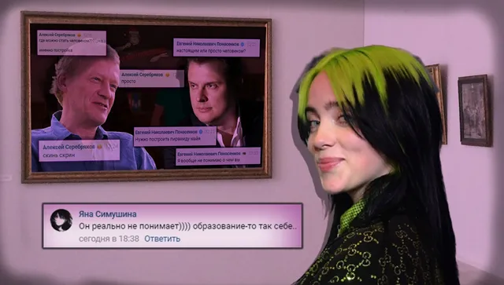
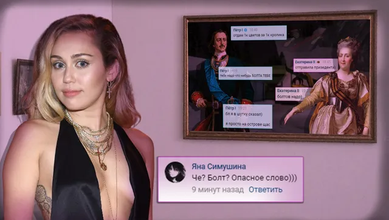
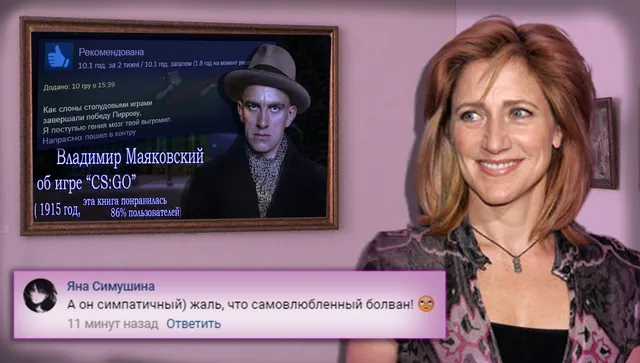
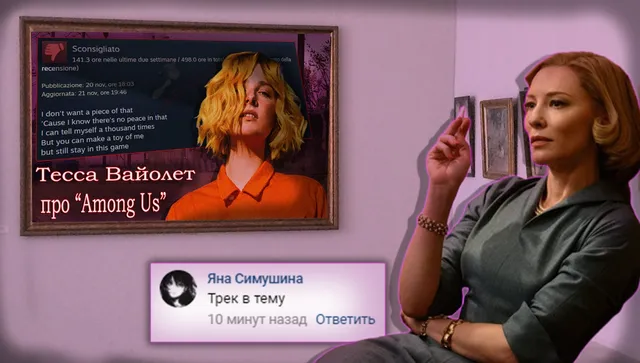

Ваши комментарии
ВКонтакте
🎼Сегодня воскресенье, на данный временной промежуток - 19:00, следовательно, при…
20 декабря 2020 · №894 в выгрузке стены · оригинал во ВКонтакте ↗





🎼Сегодня воскресенье, на данный временной промежуток - 19:00, следовательно, пришло время рубрики, посвященной вашим комментариям!
💥Титул Комментатора получают:
🌟 [id12840761|Александр Лизунов]
💛 [id599198250|Яна Симушина]
🌟 [id284440935|Никита Лагуткин]
⭐ [id586148642|Инсар Усманов]
⭐ [id371395846|Marj Moonspell]
⭐ [id315689770|Евгений Пышненко]
===============
>Всем спасибо за активность, но пишите-ка больше!!
#ВашиКомментарии@criticssteam - №23
💥Титул Комментатора получают:
🌟 [id12840761|Александр Лизунов]
💛 [id599198250|Яна Симушина]
🌟 [id284440935|Никита Лагуткин]
⭐ [id586148642|Инсар Усманов]
⭐ [id371395846|Marj Moonspell]
⭐ [id315689770|Евгений Пышненко]
===============
>Всем спасибо за активность, но пишите-ка больше!!
#ВашиКомментарии@criticssteam - №23